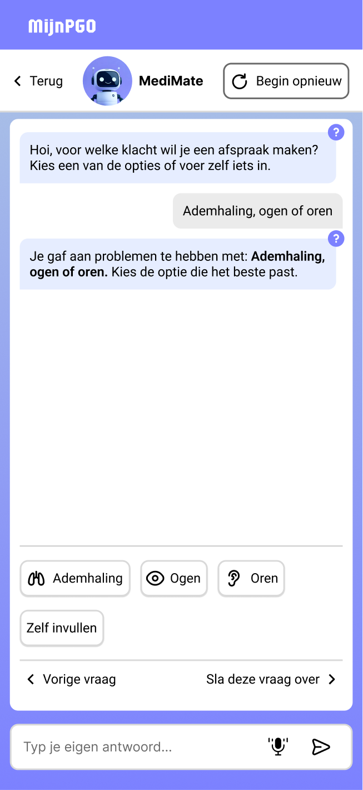
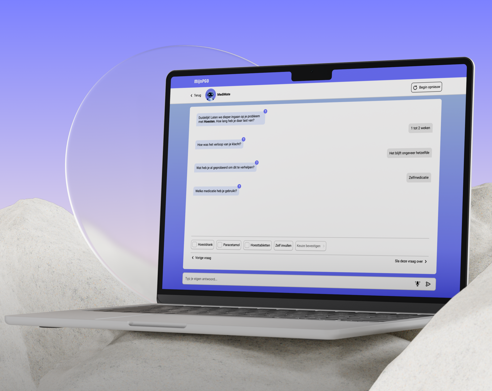
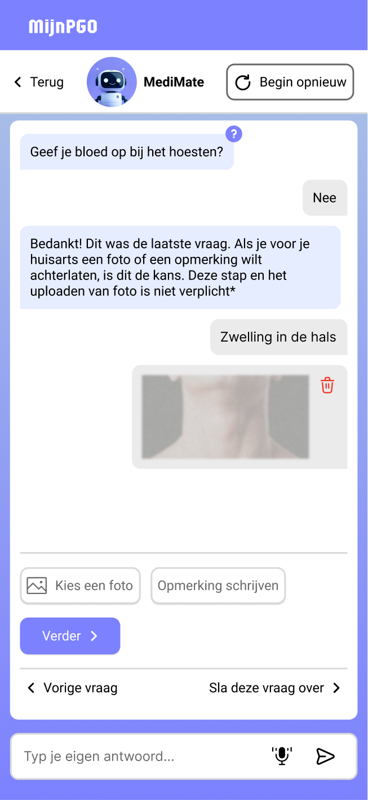
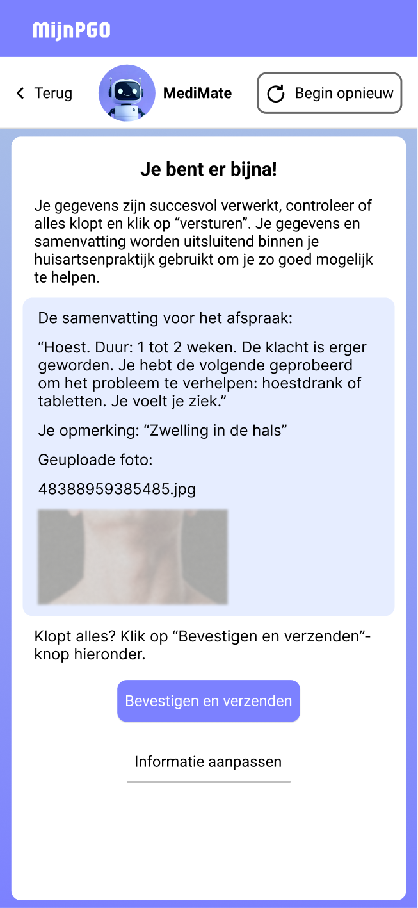
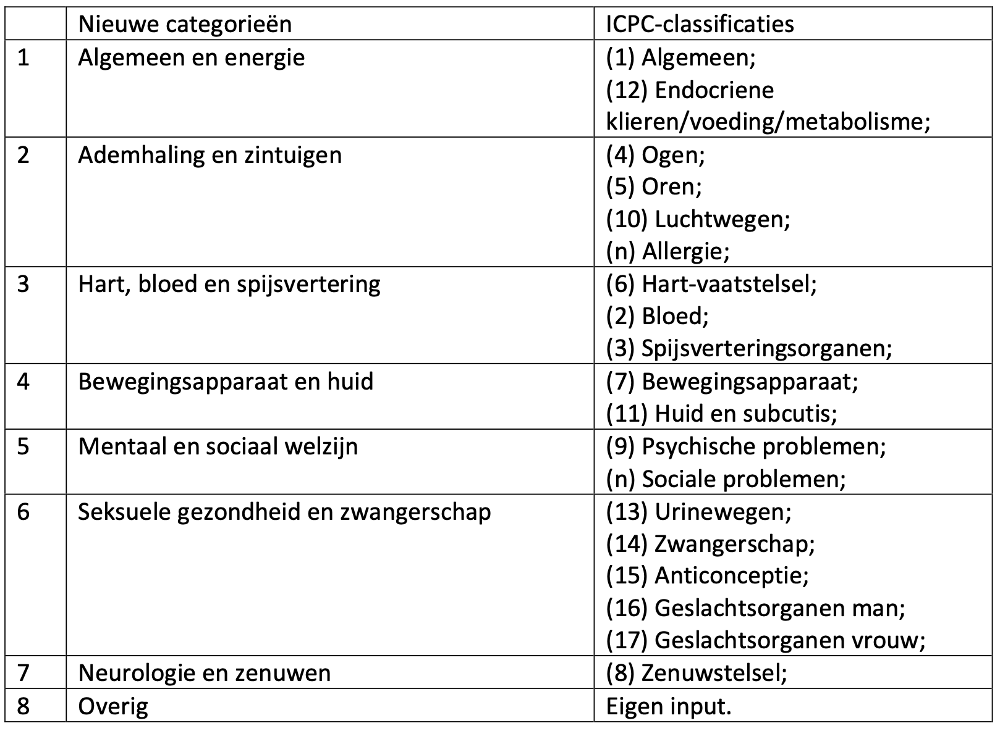
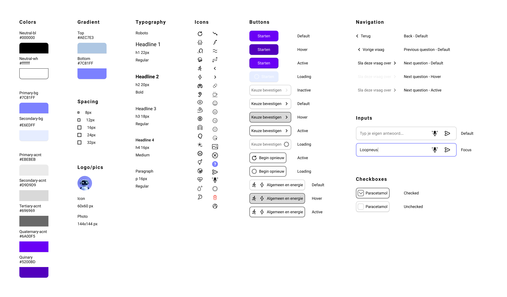

Guided chat interaction:

Quick replies and optional input support flexible responses, with the ability to skip or go back.

I'm a UX/UI Designer focused on digital health and accessibility, with a strong interest in complex, research-driven products.
I work at the intersection of user research and systems thinking and translated complexity into clear structures, user flows and scalable design solutions. During my studies, I combined an accelerated graduation track with 1.5 years of professional experience, which helped me move beyond visual design into problem framing, user journeys and product-level thinking.
I'm particularly interested in designing for complex environments like healthcare and education, where clarity, reliability and accessibility have a real impact.
Currently open to junior UX roles in research-driven teams, as well as selective freelance collaborations.
| k.korytska@gmail.com | |
| linkedin.com/in/karina-korytska | |
| Dribbble | dribbble.com/karinakorytska |

UX/UI designer (graduation project)
Communication & Multimedia Design thesis project
Conversational UX, healthcare, accessibility, information clarity
MediMate is a conversational intake concept designed to help healthcare professionals prepare before contacting a patient. The project addresses a common issue in healthcare: patients often struggle to clearly describe symptoms, while medical staff spend valuable time collecting basic information during consultations. Instead of static forms, MediMate introduces a guided chat interface that helps patients describe symptoms step by step in a more accessible and less stressful way. The concept was developed as an MVP and validated with both users and healthcare professionals.
The project started with desk research into existing intake processes and challenges in primary healthcare. Based on initial findings, a survey was conducted among potential users (n=30) to validate assumptions and better understand patient behaviour. The data was analysed and visualised using Power BI. Findings confirmed that patients often struggle to fully understand medical forms. Interestingly, the results also suggested that comprehension issues were not strongly linked to cultural or language background within this sample.
In parallel, interviews with healthcare professionals revealed three key types of information needed for effective intake:
These insights directly informed the structure of the MediMate intake flow.
Research revealed several structural issues in current intake processes:
The challenge was to design an intake flow that feels simple and human for patients, while still collecting structured and useful information for healthcare professionals.
An additional challenge was balancing clarity, trust and sensitivity in a healthcare context.
Static forms place the burden of structure on the patient, often resulting in incomplete or unclear input. They typically rely on predefined answers such as yes/no or fixed scales, offering limited space for nuance or additional explanation. A conversational approach shifts this responsibility to the system, guiding users step by step while allowing more flexible and expressive input. This improves both clarity and data quality, while allowing more flexible and expressive input, better reflecting how patients naturally describe symptoms.
The design solution was guided by three core principles:
The solution is a conversational intake flow that replaces traditional forms with a guided chat experience, allowing patients to provide structured information in a more natural way.


Quick replies and optional input support flexible responses, with the ability to skip or go back.

Users can add photos and optional comments, with full control to edit or remove them.

An automatic summary allows users to review and edit their input, supporting transparency and trust.
Design decisions focused on making complex medical intake understandable, structured and emotionally manageable for patients.
Designing for accessibility
The interface was designed to meet WCAG standards, with strong attention to contrast, typography, spacing and clear interaction states. Labels, guidance and screen reader support were integrated to improve usability for a wide range of users. Accessibility was continuously evaluated during testing, leading to refinements such as improving the visibility of help cues and tooltips.
Structured medical input design
Medical classification systems were translated into a simplified set of categories to support clearer and more efficient symptom reporting.
Structured output for healthcare professionals
The intake concludes with a structured summary, allowing medical staff to quickly understand the patient's situation and prepare for the consultation.
Preparing for triage and urgency assessment
The flow incorporates triage-related questions, enabling future integration with urgency classification and supporting more efficient decision-making.
Conversational interaction instead of forms
A guided chat flow reduces cognitive load by presenting one question at a time.
Translating medical logic into accessible language
Complex terminology is simplified to support non-medical users.
Progressive disclosure
Only relevant questions appear, preventing overload.
Flexible answer patterns
Multiple input methods support different user preferences and situations.
Designing for future integration
The flow supports potential integration with triage systems and AI-based analysis.
The project followed an iterative design cycle based on research, definition, ideation, prototyping and testing. Each phase informed the next, allowing continuous refinement of the concept based on user feedback and domain expertise.
To structure the intake flow, I worked with medical classification systems such as ICPC to group and simplify symptom categories. This helped reduce complexity and create a clearer question structure. In addition, reference frameworks such as triage guidelines (triagewijzer) were used to define core intake questions, which were later validated and approved by healthcare professionals during testing.
Design decisions were continuously refined through feedback sessions with the client and domain experts in healthcare. Accessibility and readability were continuously evaluated during testing and refined throughout the design iterations. The concept was translated into a functional HTML prototype to test real interaction behaviour and feasibility. This process revealed practical limitations, such as missing feedforward cues, which were addressed and improved during iteration.

The design needed to align with existing backend structures to ensure scalability and efficient implementation.
Feedback and feedforward cues were carefully designed to support usability and reduce confusion.
A consistent design system was defined early in the process to maintain visual and functional coherence across all screens. Components were designed to be reusable and consistent with the existing visual system.

Testing with users and healthcare professionals showed that the concept feels familiar, intuitive and trustworthy.
Participants reported that the conversational format reduces stress and provides guidance when describing symptoms.
Healthcare professionals highlighted the value of receiving structured information in advance, improving preparation and saving time during consultations.
The concept supports more complete and structured patient input, helping reduce the risk of misdiagnosis and overmedication. It also improves efficiency for healthcare staff by enabling better preparation before patient contact. As a validated MVP, the concept shows strong potential, but has not yet been tested at scale in real healthcare settings.
This project strengthened my ability to design systems that support both users and professionals. I learned to translate complex medical logic into clear, structured interactions, while considering uncertainty, emotional sensitivity and accessibility. It also highlighted the ethical responsibility of designing for healthcare, ensuring clarity, trust, inclusivity and careful handling of sensitive information. Additionally, I strengthened my ability to independently develop and validate a product within real-world constraints.